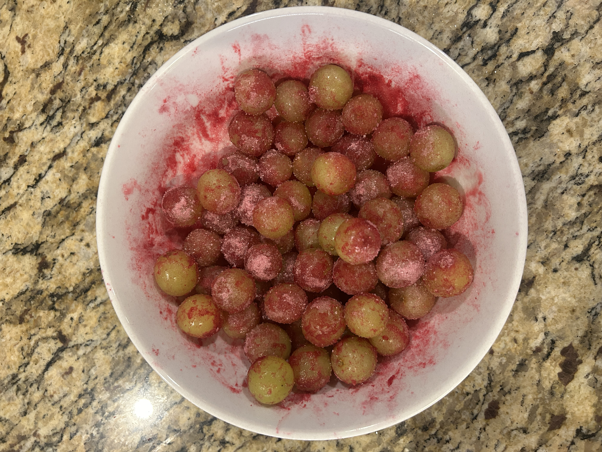
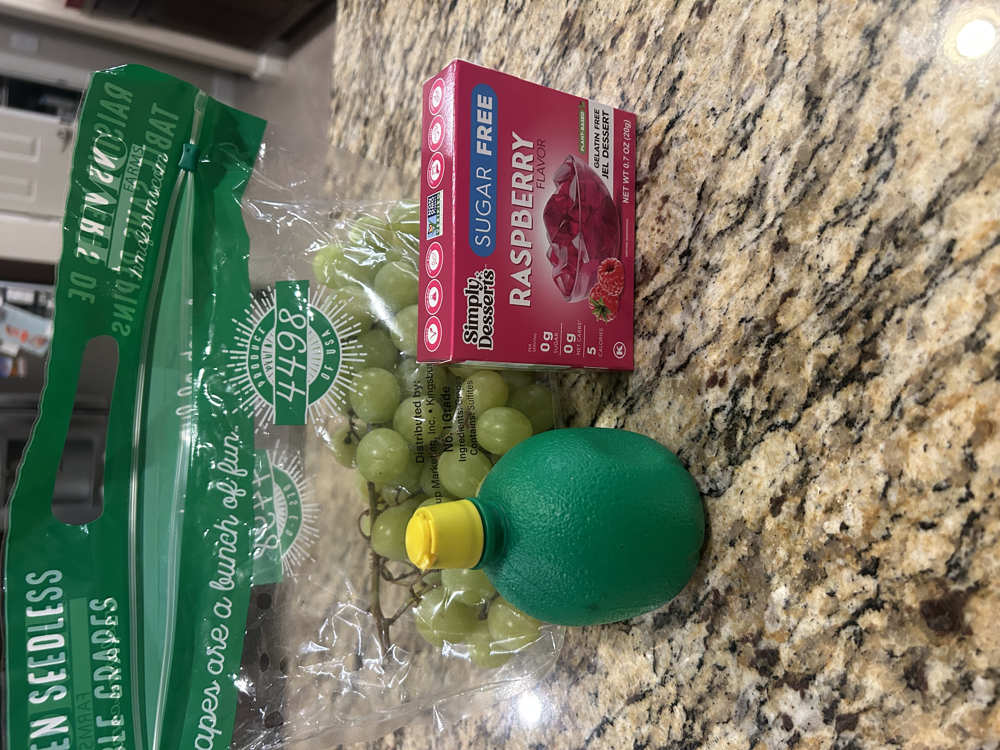

Cool off during the summer with a quick and easy healthy snack! It takes less than 5 mins to prep with only 3 ingredients and will keep everyone happy and energized. It is also a great substitute for candy especially when dealing with the little ones!
Ingredients Needed:
- Seedless grapes
- Sugar-free jello packet ( any flavor)
- Lemon juice

Nutrition Facts (2 cups of grapes):
- Calories: ~220
- Carbs: ~55g
- Fiber: ~2g
Steps to Make:
- Wash and dry 2 cups of seedless grapes
- Evenly coat grapes with lemon/lime juice
- Sprinkle over a packet of sugar-free jello
- Freeze for 30 mins and enjoy!